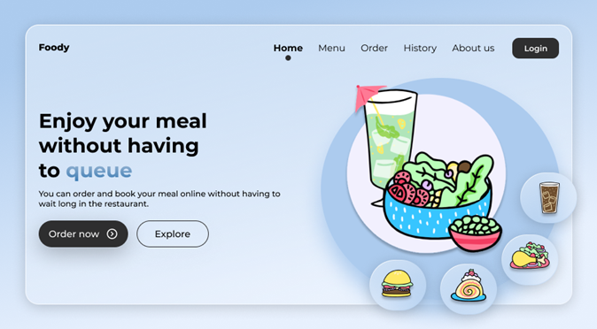
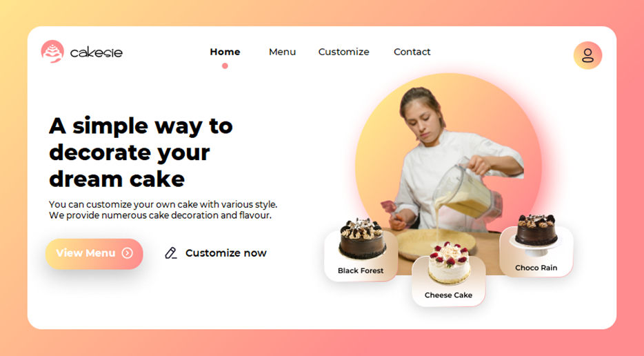
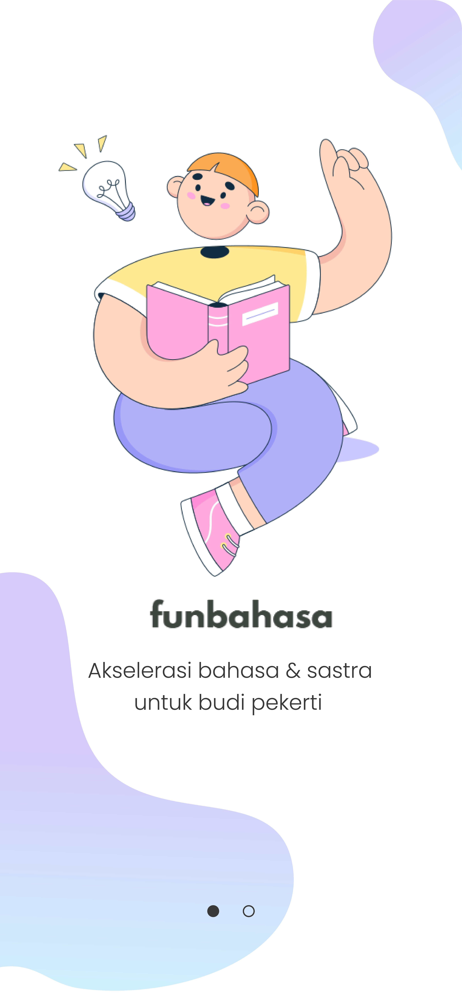
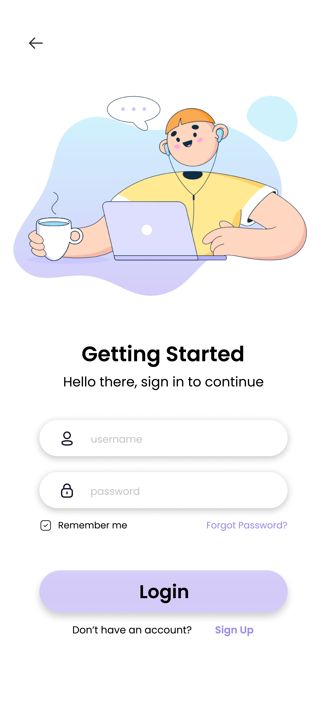

My Portofolio
Around here, design decisions aren’t made blindly. They’re foreseen with a clear understanding of how they guide users through delightful experiences. Here’s what bolstering project requirements, mixed with core design values and UX/UI best practices looks like, and can do.
Project 1
Foody
Foody merupakan sebuah aplikasi berbasis desktop yang dikembangkan dengan bahasa pemrograman Java. Aplikasi ini dibuat pada tahun 2021. Foody sendiri dibuat untuk mempermudah sistem pemesanan di sebuah restoran.
My Role: UI Designer and Programmer
Project Type: Desktop Application

Project 2
cakesie
Cakesie merupakan sebuah aplikasi berbasis desktop yang dikembangkan dengan bahasa pemrograman Java. Aplikasi ini dibuat untuk memudahkan para pengusaha toko roti maupun pembeli dalam melakukan pemesanan kue tar secara online.
My Role: UI Designer and Programmer
Project Type: Desktop Application

Project 3
FunBahasa
Aplikasi FunBahasa sendiri tersedia dalam bentuk website maupun mobile app. Pada project ini, saya dipilih sebagai Sprint Master dalam project Design Sprint. Mobile app ini diperkirakan masih akan terdapat pembaruan dalam sisi design.
My Role: UX Designer
Project Type: Mobile Application


Project 4
Senyum Anak Nusantara
Senyum Anak Nusantara atau SAN merupakan sebuah yayasan sosial yang bergerak untuk mengedukas anak-anak. Dengan berkembangnya komunitas ini, maka disepakati untuk dikembangkan sebuah aplikasi berbasis website.
My Role: UI Designer
Project Type: Website